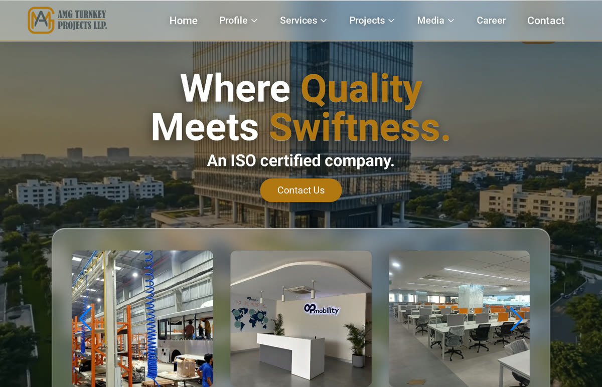

amgprojectsllp.com ↗Client · Construction
AMG Turnkey Projects
Twenty-five years old and based in Pune, they build the factory and then fit out the inside of it: six service lines across three states.
The brief was findability. Someone who needs a hospital block built should reach the right service, the right past project and a way to ask, in one pass of the page, even on a site-office connection.
- Front
- React, Vite, Tailwind, GSAP
- Back
- Node, Express, MongoDB
- Scope
- End to end
- Status
- Live


Handling your socials
You run the business. We run the accounts, every week, end to end.
Content calendar
A monthly plan built around your launches and what's trending.
Posting
Scheduled for when your audience is actually online.
Community
Comments and DMs answered the way a person would.
Growth strategy
We find what your audience stops for and do more of it.
Monthly report
What worked, what didn't, and what we're trying next.
Instagram YouTube LinkedIn